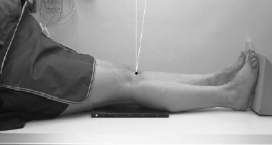

Knee(AP)
Centering point:Centre 2.5 cm below the apex of the patella through the joint
space, with the central ray at 90 degrees to the long axis of
the tibia.

Cassette Size:18cm x 24cm (8 x 10 ins)
Potrait
Exposure Factors:65kVp on
10MaS
FFD:100cm
Bucky/Grid:No
Filter:No
Pathologies:Fractures, lesions, dislocation
Position of patient and cassette
- The patient is either supine or seated on the X-ray table, with
both legs extended. The affected limb is rotated to centralize
the patella between the femoral condyles, and sandbags are
placed against the ankle to help maintain this position.
- The cassette should be in close contact with the posterior
aspect of the knee joint, with its centre level with the upper
borders of the tibial condyles.